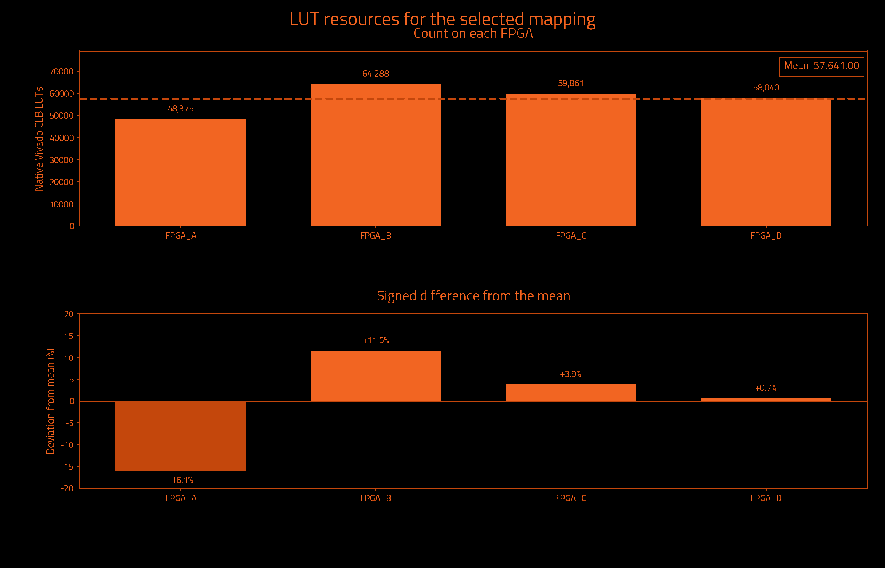
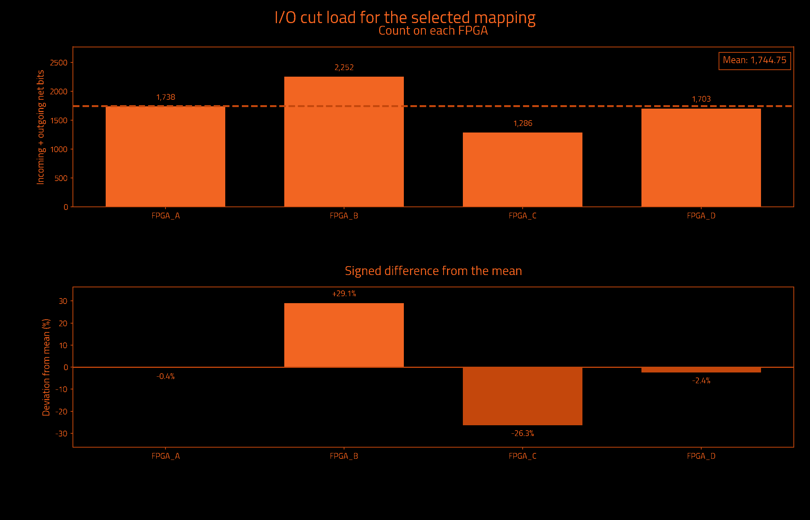
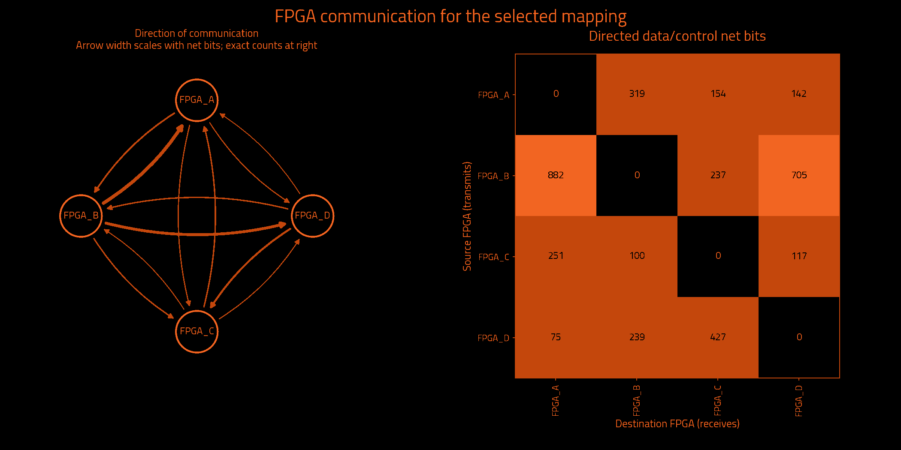

Historical measurements preserved by exact ownership equivalence · mapping.txt
Historical metrics preserved by exact ownership equivalence; not a fresh Vivado measurement.
| Selected partition | Result | Search | Result |
|---|---|---|---|
| FPGAs | 4 | Iterations requested | Unavailable |
| Native Vivado CLB LUTs | 230,564 | Iterations attempted | 3 |
| Unique data/control cut net bits | 3,331 | Selected iteration (zero-based) | 2 |
| Directed data/control net-bit pairs | 3,648 | Target board | j4.phd |
| Measurement | Result | Measurement | Result |
|---|---|---|---|
| Wall time | Unavailable | Observed CPU time | Unavailable |
| Average CPU cores | Unavailable | Average CPU use (one core = 100%) | Unavailable |
| Peak sampled process-tree memory | Unavailable | Frontend peak memory | Unavailable |
| Child processes observed | Unavailable | Sampling interval | Unavailable |
Measured through: Unavailable. CPU covers the frontend and observed descendants; sampling can miss short-lived work. Process-tree memory sums may count shared pages more than once.
No runtime measurement supplied.
Observed CPU time is a lower bound when short-lived processes escape sampling. Windows-host sampling excludes work inside WSL. Process-tree memory sums may count shared pages more than once.
| Logical FPGA | Native Vivado CLB LUTs | Device LUT utilization | Hard LUT cap | Outgoing net bits | Incoming net bits | Total I/O net bits |
|---|---|---|---|---|---|---|
| FPGA_A | 48,375 | 0.572% | 6,345,216 | 530 | 1,208 | 1,738 |
| FPGA_B | 64,288 | 0.760% | 6,345,216 | 1,594 | 658 | 2,252 |
| FPGA_C | 59,861 | 0.708% | 6,345,216 | 468 | 818 | 1,286 |
| FPGA_D | 58,040 | 0.686% | 6,345,216 | 739 | 964 | 1,703 |
| Logical FPGA | Target device | Registers | Block RAM tiles | DSP blocks | UltraRAM blocks |
|---|---|---|---|---|---|
| FPGA_A | xcvp1902 | 33,904 | 320.0 | 8 | 12 |
| FPGA_B | xcvp1902 | 46,323 | 13.5 | 0 | 0 |
| FPGA_C | xcvp1902 | 43,343 | 9.5 | 16 | 0 |
| FPGA_D | xcvp1902 | 23,231 | 0.0 | 0 | 0 |



| Measurement | Before local cleanup | Selected result |
|---|---|---|
| Worst minimum physical link hops without a register | 5 | 4 |
| Worst FPGA boundary crossings without a register | 5 | 4 |
| Extra crossings summed over modeled endpoints | 43,567 | 27,667 |
| Combinational primitives on transit paths | 5,136 | 6,002 |
| Directed hypergraph transfers | 3,375 | 3,529 |
| Sampled source timing paths scored | Unavailable | 1,000 |
| Weighted cost on sampled source timing paths | 0.0 | 0.0 |
| Signal category | Unique crossing net bits | Directed net-bit pairs |
|---|---|---|
| Data and functional synchronous control | 3,331 | 3,648 |
| Clock only | 1 | 3 |
| Reset only | 20 | 25 |
| Iteration | Result | Worst register-free crossings | Extra endpoint crossings | Transit primitives | Hypergraph transfers | Utilization imbalance |
|---|---|---|---|---|---|---|
| 0 | Not selected | 5 | 73,904 | 7,593 | 3,521 | 19.93% |
| 1 | Not selected | 4 | 63,940 | 5,308 | 3,684 | 10.12% |
| 2 | Selected best accepted mapping | 4 | 27,667 | 6,002 | 3,529 | 11.53% |
| Measurement | Meaning |
|---|---|
| Worst minimum physical link hops without a register | Lower bound from the declared topology, not a routed transport path. |
| Worst FPGA boundary crossings without a register | Largest ownership-change count on a modeled combinational path. |
| Extra crossings summed over modeled endpoints | Crossings beyond the first, summed over endpoints; not a distinct-net count. |
| Combinational primitives on transit paths | Logic that receives and forwards a remote signal without register capture. |
| Directed hypergraph transfers | Destination partitions beyond the first, summed over modeled hyperedges. |
| Sampled source timing paths scored | Exported Vivado timing samples, not all-path timing closure. |
| Weighted cost on sampled source timing paths | Relative ranking cost, not measured transport delay or DUT frequency. |
I/O cut load counts one outgoing multicast net once at its source and once at each receiving FPGA. Clock-only and reset-only nets are separate. Counts describe logical payload, not physical package pins or a pinmux ratio. External top-level ports have no invented FPGA home. Hypergraph transfers differ from the full net-bit census.
Deviation is 100 × (FPGA count / mean − 1); all-zero designs have 0% deviation. Device utilization and hard LUT caps are separate. Before local cleanup means this selected candidate before refinement, not necessarily the first iteration. More iterations can improve a result; the best accepted candidate is retained.
Timing sample coverage: exported sampled native setup paths only; not all-path STA. Path model: primitive conservative data arcs; top IO has no FPGA home. These are source-model measurements, not achieved hardware timing.
| Logical FPGA | Physical location | Selected direct neighbors |
|---|---|---|
| FPGA_A | C01/S01/E | 3 |
| FPGA_B | C01/S01/F | 3 |
| FPGA_C | C01/S01/G | 3 |
| FPGA_D | C01/S01/H | 3 |
| FPGA | Neighbor | Declared lanes | Wires at topology minimum compression |
|---|---|---|---|
| FPGA_A | FPGA_B | 16 | 1,024 |
| FPGA_A | FPGA_C | 16 | 1,024 |
| FPGA_A | FPGA_D | 16 | 1,024 |
| FPGA_B | FPGA_C | 16 | 1,024 |
| FPGA_B | FPGA_D | 16 | 1,024 |
| FPGA_C | FPGA_D | 16 | 1,024 |
The communication matrix shows signal demand. Declared links guide optimization; transport routing and physical bandwidth allocation happen later.
Resources describe original synthesized logic; future wrapper and transport resources are excluded. Mapping format, ownership and hard capacity checks are acceptance gates. Downstream regroup and hardware validation are separate.
{
"status": "HISTORICAL_METRICS_PRESERVED_BY_EXACT_OWNERSHIP_EQUIVALENCE",
"backend_version": "1.6.2",
"partition_preset_requested": "default",
"frontend_sha256": "d4dd69ef7849e0e5770e1ea0173f2106b1f1ec13ccc9303f7e8eaf9f3bc7237c",
"native_timeout_seconds": 7200.0,
"native_timeout_scope": "persistent checkpoint startup and each resource request; batch commands unaffected",
"topology_sha256": "b8a7099327cdefae84801c6f37374c794417239c551e8990bedc444e76b8e211",
"topology_source_sha256": "6f393e7eee76cbf20cd96e46f52c8c0a34be2365c7222aa6cf7abfe87c7e1b83",
"fpga_count": 4,
"native_backend_invoked": true,
"preferred_native_balance": 0.2,
"selection_policy_version": 3,
"native_balance_absolute_tolerance": 1e-12,
"effective_solver_epsilon": 0.3,
"effective_refiner_scalar_balance": 0.3,
"native_balance_search_envelope": 0.3,
"target_capacity_dependency_manifest_sha256": "18a3ac71857350176b8d15449e6cf21f106a9c902bd439a5a7d9d722c218d2c3",
"target_capacity_dependencies_sha256": {
"C:\\Users\\Wrelks\\Desktop\\upgrade_partitioner_handle_large_designs\\RapidWright\\scripts\\partition\\target_capacity.py": "652db231c4c19cfb2aa7bea140c1184d6f51162be857358b94152b3a2661f992",
"C:\\Users\\Wrelks\\Desktop\\upgrade_partitioner_handle_large_designs\\topologies\\j4_board_topology.json": "6f393e7eee76cbf20cd96e46f52c8c0a34be2365c7222aa6cf7abfe87c7e1b83",
"C:\\Users\\Wrelks\\Desktop\\upgrade_partitioner_handle_large_designs\\topologies\\j4_board_topology.json.targets.json": "25db82ebe61166d1d1998042eaa07ad9c843238119e5dd6e16e70695249afcd4",
"C:\\Users\\Wrelks\\Desktop\\upgrade_partitioner_handle_large_designs\\RapidWright\\scripts\\partition\\part_catalog\\vivado_2025_1_parts.tsv": "a402de944fbd660743f6a7ff12403060e886627439826186600da78618e6a1fe",
"C:\\Users\\Wrelks\\Desktop\\upgrade_partitioner_handle_large_designs\\RapidWright\\scripts\\partition\\part_catalog\\vivado_2025_1_parts.tsv.identity.json": "c5937f61bb02a289745eee9e8cc359b56692ed908e206cf549830da035957707"
},
"effective_logical_balance": 0.5,
"logical_balance_policy": "automatic_uniform_or_unspecified_native_caps",
"logical_balance_requested": null,
"logical_resource_capacities_explicit": false,
"engine_manifest_sha256": "b64272b8c469cffdf98ea76b1afcae5799a0fa0bc63d855ece820af18d841f8a",
"source_pair_association": {
"version": 1,
"mode": "supplied_manifest_legacy",
"original_receipt": "C:\\Users\\Wrelks\\Desktop\\upgrade_partitioner_handle_large_designs\\LSUT_2\\work\\partition_experiment\\opentitan_reference\\export_receipt.json",
"receipt_snapshot": "C:\\Users\\Wrelks\\Desktop\\upgrade_partitioner_handle_large_designs\\work\\final_j4_matrix_controller_v3\\evidence\\OT_k4\\installed_serial_default_20261014_2ee24231\\inputs\\source_pair_receipt.json",
"original_receipt_sha256": "dcbd895cbef9f2a72ca4e66cdb97530e69c5af3d9716b1912afd87470de129c8",
"receipt_snapshot_sha256": "dcbd895cbef9f2a72ca4e66cdb97530e69c5af3d9716b1912afd87470de129c8",
"input_edif": "C:\\Users\\Wrelks\\Desktop\\upgrade_partitioner_handle_large_designs\\LSUT_2\\work\\partition_experiment\\opentitan_reference\\post_synth.edf",
"input_edif_sha256": "d11771253feb2a657e761f18ee2442fc8680b8dd8e2a6dfaffaa63cfbbb9904b",
"checkpoint": "C:\\Users\\Wrelks\\Desktop\\upgrade_partitioner_handle_large_designs\\LSUT_2\\work\\opentitan\\vivado_xcu250-figd2104-2-e\\synth.dcp",
"checkpoint_sha256": "bad3c31ed88515a4269c7d378463b3fc31322341856079aba0434ec2bea2658b",
"native_primitives": "C:\\Users\\Wrelks\\Desktop\\upgrade_partitioner_handle_large_designs\\LSUT_2\\work\\partition_experiment\\opentitan_reference\\leaf_primitives.tsv",
"native_primitives_sha256": "a7ffc23cadb60b8f6a002552d388a8b78a25b691a682e5d5eda01370ea0ddd7c",
"producer_evidence_verified": false,
"export_run_association": "Supplied PASS manifest asserts one export association; producer command, actual native exit0 and completion are not verified",
"scope": "Exact payload and receipt-byte consistency; no arbitrary EDIF/checkpoint electrical-equivalence or cryptographic-authenticity proof"
},
"source_pair_provenance_sha256": "4f2e0e849f48ec5a1717242699d20cbd1b9b149dde83ec241ab6a3e524ac5860",
"java_heap": "16G",
"expanded_native_leaf_count": 435034,
"timing_guidance": "sampled_source_STA",
"timing_paths_sha256": "cee575d8c746eaa240746cc5fc83c4a7e7be4dc7ca3970a19fc60f802b507797",
"extra_delay_ns_per_crossing": null,
"native_artifact_storage": "verified_lossless_compression",
"native_oracle_mode": "persistent_original_checkpoint",
"native_residency_policy": "Probe after Java; retain only when measured available RAM covers the next heap, 8 GiB overhead and a prior-HGR native solver reserve",
"native_residency_decisions": [
{
"iteration": 0,
"stage": "after_java",
"available_bytes": 110036848640,
"decision": "load_native_probe"
},
{
"iteration": 1,
"stage": "before_java",
"available_bytes": 105038270464,
"prior_hgr_bytes": 8019783,
"native_solver_reserve_bytes": 2404116704,
"decision": "retain"
},
{
"iteration": 2,
"stage": "before_java",
"available_bytes": 105027530752,
"prior_hgr_bytes": 8155751,
"native_solver_reserve_bytes": 2408467680,
"decision": "retain"
}
],
"native_oracle_scripts_sha256": {
"C:\\Users\\Wrelks\\Desktop\\upgrade_partitioner_handle_large_designs\\RapidWright\\tools\\native_resource_session.py": "caa467021ca9a907b233f52d086d2a5858b08111ba950b718273964f36bd0ca5",
"C:\\Users\\Wrelks\\Desktop\\upgrade_partitioner_handle_large_designs\\RapidWright\\tools\\resource_session.tcl": "dc660b593517075ee79bc42487cdeff95b075cc8f1fc1edbd041e05d9ba17d2a",
"C:\\Users\\Wrelks\\Desktop\\upgrade_partitioner_handle_large_designs\\RapidWright\\tools\\report_partition_resources.tcl": "255ddb495ba953f77a19a373481cbfbde7ca2f127c6f595764b2a101a817ef38",
"C:\\Users\\Wrelks\\Desktop\\upgrade_partitioner_handle_large_designs\\RapidWright\\tools\\archive_native_request.py": "1053024a0794942eeb12bcdd77827541220f05d7355089f8113cac90f42eeb6b"
},
"capture_cohort_cleanup": {
"requested": "off",
"effective": "off",
"backend_supported": true,
"reason": "requested_off"
},
"native_feedback_quality_guard": "accepted_mapping_anchor",
"quality_guard_policy": "ranked",
"minimum_link_hop_analysis_available": true,
"selected_iteration": 2,
"native_cap_check": "PASS",
"native_balance_target_met": true,
"preferred_native_balance_target_met": true,
"native_search_envelope_met": true,
"new_policy_complete_within_search_envelope": true,
"source_input": "C:\\Users\\Wrelks\\Desktop\\upgrade_partitioner_handle_large_designs\\LSUT_2\\work\\partition_experiment\\opentitan_reference\\post_synth.edf",
"source_sha256": "d11771253feb2a657e761f18ee2442fc8680b8dd8e2a6dfaffaa63cfbbb9904b",
"checkpoint_sha256": "bad3c31ed88515a4269c7d378463b3fc31322341856079aba0434ec2bea2658b",
"native_inventory_sha256": "a7ffc23cadb60b8f6a002552d388a8b78a25b691a682e5d5eda01370ea0ddd7c",
"hard_native_clb_lut_caps": {
"FPGA_A": 6345216,
"FPGA_B": 6345216,
"FPGA_C": 6345216,
"FPGA_D": 6345216
},
"selection_policy": "Hard capacities and one cut/topology budget; complete paths; worst minimum-link hop lower bound, logical register-free crossings, sampled source timing cost, endpoint excess, transit; native search-envelope limitation tier, transfers, topology cost, then fine balance; preferred balance remains soft",
"minimum_link_hop_scope": "Declared selected adjacency shortest-link lower bounds; not actual transport routing, congestion or nanoseconds",
"scope": "Original synthesized netlist subset utilization; no future wrapper/transport resources included",
"accepted_mapping_sha256": "ce123a0a45471b29b8db474822c4a9df81ba3528282fc487198310aba89eae3d",
"historical_metrics_scope": "Original native and source-graph measurements preserved by exact ownership equivalence; not rerun"
}{
"vivado_resources.tsv": "34742a95ba810360adf20bdc60d43766a5736d0245832ba65125a5c215bf240d",
"lut_report.txt": "4ef5c021b5e68f7290ff7775afb22bbb99f9019e6f10645d9485c691ef968bd9",
"fpga_control_categories.tsv": "216c319943b13764f916b4b21f4aa3144fc07cf40e3da3b1290ac51e477dd7cb",
"hardware_quality.txt": "55c6ea4056f069f1b225b34355380a7aa266203de72663b464cd1cfc9166e309",
"run_provenance.json": "40e981d7333debc0a7ed42b8f2ad4cfadd0cde66bb3077a138a258dd249b7871",
"target_capacity.json": "1ad8569f04dd1a33116914a3fdaf9a1603cb35784edc39673e248f05cc3476c7",
"native_lut_caps.tsv": "61789dd78f6456e6db348a1c85db96b12a8f7cce3a27e9c1dac4182772d42ecd",
"cells.txt": "75920e73f2af56d80cff5ff9a3f643c67cb3a98f7161e0ecd67a62deecaf9e5c",
"topology_manifest.json": "2d00fda6f8321f4db9e89688e46e2aa41e61e271091cc9d7b8d2f3d442260f96"
}{
"status": "HISTORICAL_METRICS_PRESERVED_BY_EXACT_OWNERSHIP_EQUIVALENCE",
"fresh_native_measurement": false,
"historical_mapping_sha256": "574a96b4079dce7d6c9ebb9a7908d3d3cfb835fba616a6e27c4320a807d6def9",
"successor_mapping_sha256": "ce123a0a45471b29b8db474822c4a9df81ba3528282fc487198310aba89eae3d",
"functional_leaves_compared": 427171,
"ownership_mismatches": 0,
"top_port_owner_unchanged": true,
"source_edif_sha256": "d11771253feb2a657e761f18ee2442fc8680b8dd8e2a6dfaffaa63cfbbb9904b",
"source_checkpoint_sha256": "bad3c31ed88515a4269c7d378463b3fc31322341856079aba0434ec2bea2658b",
"proof_files_sha256": {
"prior_native_evidence.json": "5ad570f58856ab57b26ad72158c02bbad937928164c63db761098f3b0747f678",
"reencoding_equivalence.json": "1496286e9d5ed7e029dfa64e71ee6b8c5b19c038e4441c5f5200331025bc29e2",
"mapping_contract.json": "e835f6c66bccc1c1f02d8510c427fb9486d1750f475e5cfecfb339e160b6c2c0",
"mapping_records.tsv": "cb8cdc0875624c66fba60bcd8b092e06f785e5936946b529b0086c4ebf8c78bd",
"mapping_ownership.tsv.gz": "d144739870d0311784a2025f20b94eac4ebeaa5ca6ad3a4627ce599d2aedb368"
},
"historical_artifact_sha256": {
"cells.txt": "75920e73f2af56d80cff5ff9a3f643c67cb3a98f7161e0ecd67a62deecaf9e5c",
"endpoint_kind_diagnostic.tsv": "f365bb37646bee1b18677b7afe947b7418a96aa0d565aa67db8b0c855087e11f",
"final_assignment.part": "e44d9b35cf736a62b30f9a2439cb26d6e2f15053ff7419fb348383a78af5dd8f",
"fpga_control_categories.tsv": "216c319943b13764f916b4b21f4aa3144fc07cf40e3da3b1290ac51e477dd7cb",
"fpga_devices.tsv": "a62a6e290a0030facec4070d0547e7f82a4bab734493a6771ff95995984fed61",
"fpga_io_cuts.txt": "cc7180f7da68c90fb8074039267431760d53c067bb40b1026d0bbf64ddb3439a",
"fpga_net_crossings.tsv": "476ec52933ad5be511cc353176c4b70aa914a9eff86fc4daaae6c1e6918f45e9",
"hardware_quality.txt": "55c6ea4056f069f1b225b34355380a7aa266203de72663b464cd1cfc9166e309",
"identity.json": "7c3e919b722b68478a62334cf1f847ee939f6dc5d1d8456a8ab7bfc88ddb6807",
"io_cuts.txt": "ce1cb98b359e0d1517b0b562f2513960131a062702f9bd2f54df58d27cfb12e5",
"logical_lut_report.txt": "01e85628eddcb73e130b0a4ba2028d4086bf46bc89ccac6029a01c1214656ae7",
"logical_resources.tsv": "f1087995228fff658db2cc2547fd98988704367a8c1ab93424f27d64f14f0112",
"lut_report.txt": "4ef5c021b5e68f7290ff7775afb22bbb99f9019e6f10645d9485c691ef968bd9",
"mapping.txt": "574a96b4079dce7d6c9ebb9a7908d3d3cfb835fba616a6e27c4320a807d6def9",
"metric_definitions.txt": "28c1e87b6c622b819cb9908f3ad9f58277331314f7be645e2b80c10d99238ba8",
"native_candidates.tsv": "9615297bdc67d49535de136a196bdf7b7f0c5dcd3c997ec295f762fcd757d290",
"native_complete.txt": "672852262ad502a8935d6c66a3162ad5371a15beb8b49ad0a6d294c0f02b2f77",
"native_lut_caps.tsv": "61789dd78f6456e6db348a1c85db96b12a8f7cce3a27e9c1dac4182772d42ecd",
"parity_audit_final/00_complete_cut_category_parity.json": "c6b53be48ef62dcef7c6054443e3293f67e676379624bd19718edc39305e44e5",
"parity_audit_final/01_comparison_receipt.json": "adb16b73f51af76376ba53a4f96647b67845779a7d5590c676c1a067ba3b29fd",
"parity_audit_final/02_OT_k4.json": "474be6f46cf73e12313053845121d84c111627ceac1505829b7f5f9d6247a9cb",
"parity_audit_final/03_metadata_receipt.json": "f0df29698563c161f2f3930c667c036415bc1962cf5e7c12d7e67451e1762d58",
"parity_audit_final/04_comparison_inputs.json": "7b66709e0316e4f301a49e74b1240fd791143d176cd3a51788b6ef3a21dd2d01",
"parity_audit_final/05_owned_process_receipt.json": "b9ae7c59f45e23aeb4d9531523e5318c513c464e8d45c3a553461cb135f91788",
"parity_audit_final/compact_mapping_audit.json": "faed118dccc8ec12e21a619dad1a76ee9b8b0ec64b1df51c7054e40fb5201fd8",
"parity_audit_final/identity_receipt.json": "63a30cc0699d82ab24ecca7aef47eb5430f491ffaf3925ba7e1152c1ad8216fe",
"primitive_counts.tsv": "b7d4454fb4d1ad6a18ffe284367e36d9737aa95b927d6bf78e6e1d7b8d1255c7",
"QUALIFICATION.json": "5ed3fce2c05e7523e10c68073b911db51a4f98cbf17b2bbecc1f3fe993a83232",
"refinement_passes.tsv": "19adb79428b684607f75ad9ca3be7bd7056015971c9b866e8d310e21de8ae7e5",
"run_provenance.json": "40e981d7333debc0a7ed42b8f2ad4cfadd0cde66bb3077a138a258dd249b7871",
"source_mapping.txt": "574a96b4079dce7d6c9ebb9a7908d3d3cfb835fba616a6e27c4320a807d6def9",
"STATUS.json": "2f01d466714d49adce7723fd8362258c253b7a9c85e68617cf7b1820dc60457f",
"swap_refinement_passes.tsv": "834aa7622074655592a32595f9204bb740ba1d9a8ae65ff83f4a86b892202106",
"target_capacity.json": "1ad8569f04dd1a33116914a3fdaf9a1603cb35784edc39673e248f05cc3476c7",
"target_capacity_dependency_manifest.json": "18a3ac71857350176b8d15449e6cf21f106a9c902bd439a5a7d9d722c218d2c3",
"topology_manifest.json": "2d00fda6f8321f4db9e89688e46e2aa41e61e271091cc9d7b8d2f3d442260f96",
"vivado_resource_summary.txt": "726a307c05801d74f3c43d50e0e9f3ed228833ade50c7c348e7fb5199b0d83d6",
"vivado_resources.tsv": "34742a95ba810360adf20bdc60d43766a5736d0245832ba65125a5c215bf240d",
"worst_combinational_path.tsv": "79c8f0afdb7dd077063a36e42ed01e5262d8a0e60987bf57c1b01a166d805a28"
},
"historical_metrics_directory": "C:\\Users\\Wrelks\\Desktop\\upgrade_partitioner_handle_large_designs\\RESULTS FOR J4\\OPENTITAN_EARL_GREY\\4 FPGAS",
"scope": "Historical source-netlist resource and connectivity measurements preserved by checked exact functional ownership and top-port owner equivalence; no new Vivado, regroup, wrapper or hardware validation"
}